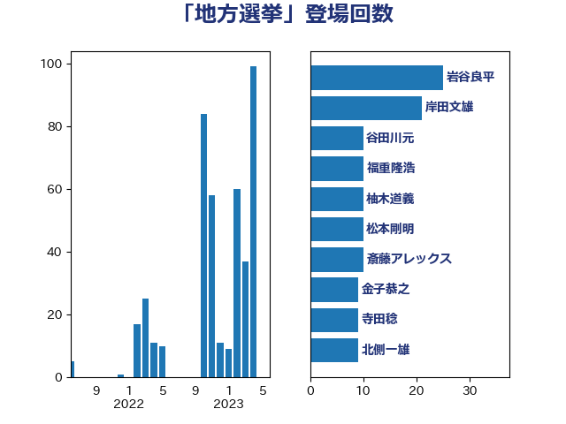

単語「地方選挙」

| 岩谷良平 | 日本維新の会 | 25 回 |
| 岸田文雄 | 自由民主党 | 21 回 |
| 谷田川元 | 立憲民主党 | 10 回 |
| 福重隆浩 | 公明党 | 10 回 |
| 柚木道義 | 立憲民主党 | 10 回 |
| 松本剛明 | 自由民主党 | 10 回 |
| 斎藤アレックス | 国民民主党 | 10 回 |
| 金子恭之 | 自由民主党 | 9 回 |
| 寺田稔 | 自由民主党 | 9 回 |
| 北側一雄 | 公明党 | 9 回 |
| 西岡秀子 | 国民民主党 | 8 回 |
| 山本博司 | 公明党 | 8 回 |
| 宮本岳志 | 日本共産党 | 8 回 |
| 柳ヶ瀬裕文 | 日本維新の会 | 6 回 |
| 杉本和巳 | 日本維新の会 | 6 回 |
| 早坂敦 | 日本維新の会 | 6 回 |
| 塩川鉄也 | 日本共産党 | 6 回 |
| 吉田はるみ | 立憲民主党 | 6 回 |
| 冨樫博之 | 自由民主党 | 6 回 |
| 高野光二郎 | 自由民主党 | 5 回 |
| 竹詰仁 | 国民民主党 | 5 回 |
| 山岸一生 | 立憲民主党 | 5 回 |
| 寺田学 | 立憲民主党 | 5 回 |
| 住吉寛紀 | 日本維新の会 | 5 回 |
| 中川貴元 | 自由民主党 | 5 回 |
| 熊谷裕人 | 立憲民主党 | 4 回 |
| 渡辺孝一 | 自由民主党 | 4 回 |
| 早稲田ゆき | 立憲民主党 | 4 回 |
| 尾身朝子 | 自由民主党 | 4 回 |
| 古川直季 | 自由民主党 | 4 回 |
| 阿部弘樹 | 日本維新の会 | 3 回 |
| 野間健 | 立憲民主党 | 3 回 |
| 西村智奈美 | 立憲民主党 | 3 回 |
| 神谷裕 | 立憲民主党 | 3 回 |
| 片山大介 | 日本維新の会 | 3 回 |
| 渡辺周 | 立憲民主党 | 3 回 |
| 後藤祐一 | 立憲民主党 | 3 回 |
| 市村浩一郎 | 日本維新の会 | 3 回 |
| 古賀之士 | 立憲民主党 | 3 回 |
| 中司宏 | 日本維新の会 | 3 回 |
| おおつき紅葉 | 立憲民主党 | 3 回 |
| 鈴木俊一 | 自由民主党 | 2 回 |
| 遠藤良太 | 日本維新の会 | 2 回 |
| 近藤和也 | 立憲民主党 | 2 回 |
| 西田実仁 | 公明党 | 2 回 |
| 落合貴之 | 立憲民主党 | 2 回 |
| 篠原孝 | 立憲民主党 | 2 回 |
| 石川香織 | 立憲民主党 | 2 回 |
| 浜田聡 | NHK党 | 2 回 |
| 櫻井周 | 立憲民主党 | 2 回 |
| 森田俊和 | 立憲民主党 | 2 回 |
| 森山浩行 | 立憲民主党 | 2 回 |
| 徳永久志 | 立憲民主党 | 2 回 |
| 宮路拓馬 | 自由民主党 | 2 回 |
| 吉田とも代 | 日本維新の会 | 2 回 |
| 古川俊治 | 自由民主党 | 2 回 |
| 北神圭朗 | 無所属 | 2 回 |
| 伊藤渉 | 公明党 | 2 回 |
| 高木真理 | 立憲民主党 | 1 回 |
| 馬場雄基 | 立憲民主党 | 1 回 |
| 野田国義 | 立憲民主党 | 1 回 |
| 足立康史 | 日本維新の会 | 1 回 |
| 西田昭二 | 自由民主党 | 1 回 |
| 藤田文武 | 日本維新の会 | 1 回 |
| 舩後靖彦 | れいわ新選組 | 1 回 |
| 臼井正一 | 自由民主党 | 1 回 |
| 細野豪志 | 自由民主党 | 1 回 |
| 福山哲郎 | 立憲民主党 | 1 回 |
| 石井苗子 | 日本維新の会 | 1 回 |
| 矢倉克夫 | 公明党 | 1 回 |
| 玉木雄一郎 | 国民民主党 | 1 回 |
| 源馬謙太郎 | 立憲民主党 | 1 回 |
| 湯原俊二 | 立憲民主党 | 1 回 |
| 渡辺創 | 立憲民主党 | 1 回 |
| 浅川義治 | 日本維新の会 | 1 回 |
| 河西宏一 | 公明党 | 1 回 |
| 沢田良 | 日本維新の会 | 1 回 |
| 池下卓 | 日本維新の会 | 1 回 |
| 橘慶一郎 | 自由民主党 | 1 回 |
| 森本真治 | 立憲民主党 | 1 回 |
| 林芳正 | 自由民主党 | 1 回 |
| 新藤義孝 | 自由民主党 | 1 回 |
| 手塚仁雄 | 立憲民主党 | 1 回 |
| 平林晃 | 公明党 | 1 回 |
| 平口洋 | 自由民主党 | 1 回 |
| 工藤彰三 | 自由民主党 | 1 回 |
| 山谷えり子 | 自由民主党 | 1 回 |
| 山添拓 | 日本共産党 | 1 回 |
| 山本剛正 | 日本維新の会 | 1 回 |
| 山下貴司 | 自由民主党 | 1 回 |
| 小沼巧 | 立憲民主党 | 1 回 |
| 奥野総一郎 | 立憲民主党 | 1 回 |
| 天畠大輔 | れいわ新選組 | 1 回 |
| 大岡敏孝 | 自由民主党 | 1 回 |
| 大塚拓 | 自由民主党 | 1 回 |
| 堀場幸子 | 日本維新の会 | 1 回 |
| 坂本祐之輔 | 立憲民主党 | 1 回 |
| 吉田宣弘 | 公明党 | 1 回 |
| 古川禎久 | 自由民主党 | 1 回 |
| 勝部賢志 | 立憲民主党 | 1 回 |
| 前川清成 | 日本維新の会 | 1 回 |
| 伊藤岳 | 日本共産党 | 1 回 |
| 伊藤孝恵 | 国民民主党 | 1 回 |
| 伊東信久 | 日本維新の会 | 1 回 |
| 仁木博文 | 無所属 | 1 回 |
| 井林辰憲 | 自由民主党 | 1 回 |
| 三木圭恵 | 日本維新の会 | 1 回 |